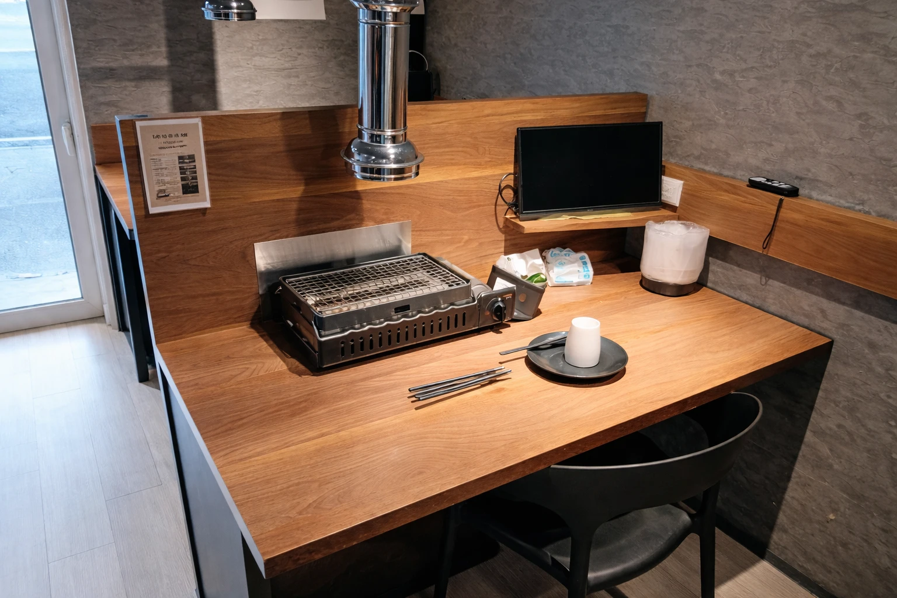
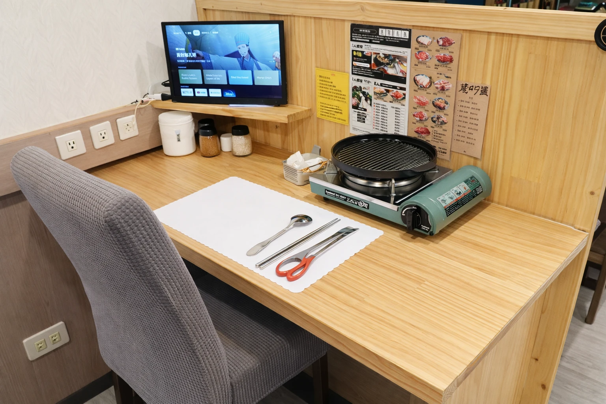
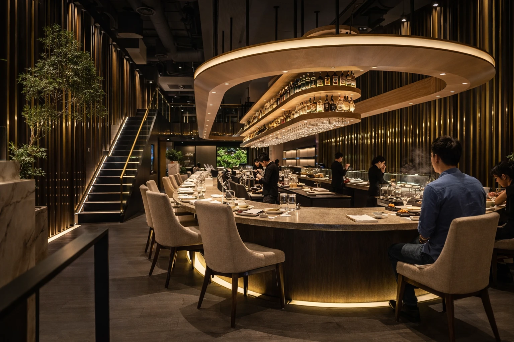
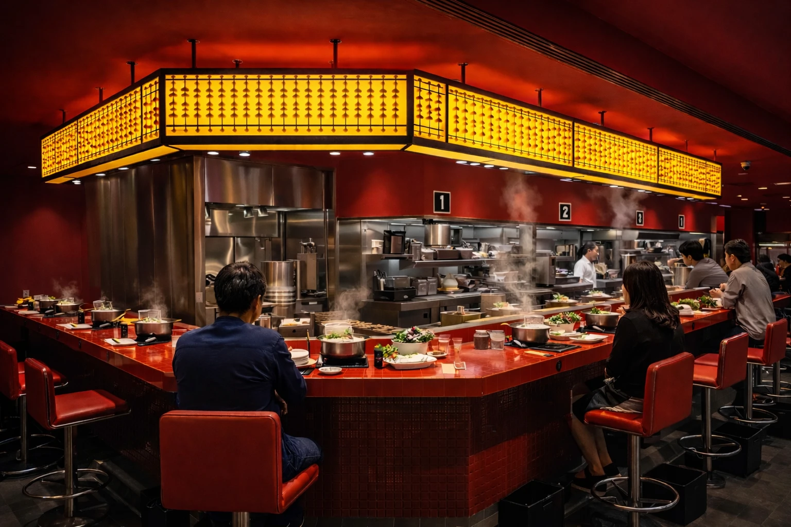
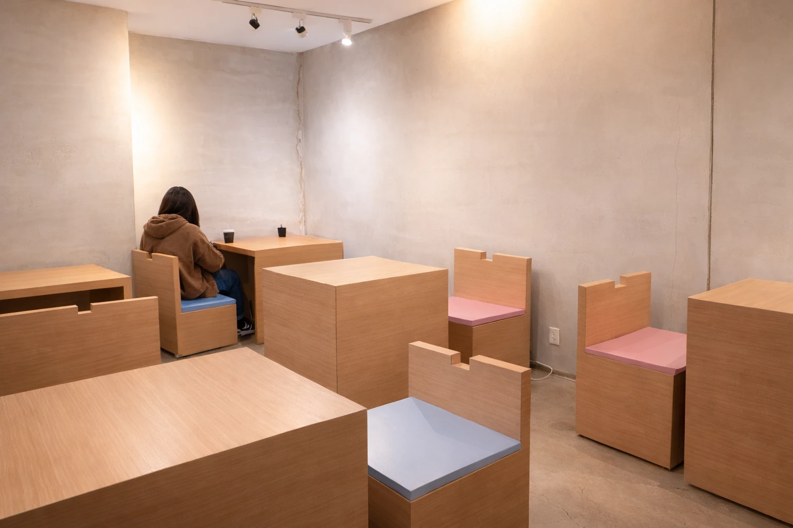
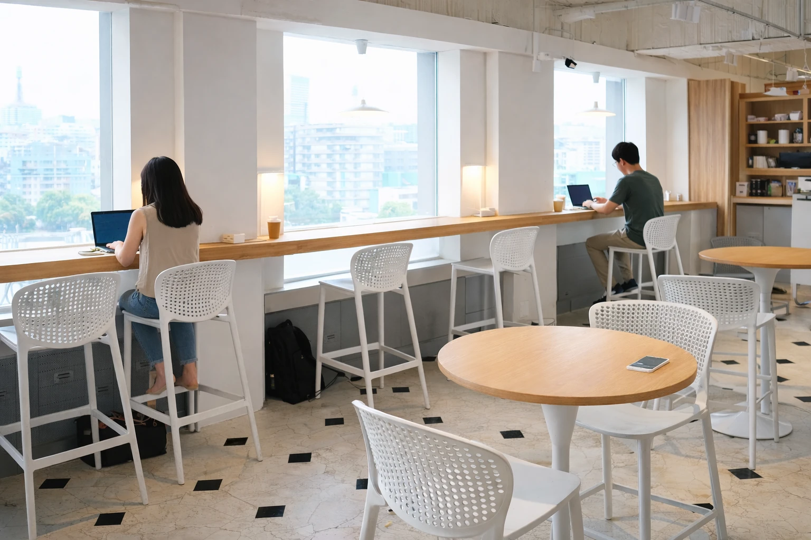

雲霧翩翩
台北｜燒肉
雲霧翩翩主打一個人也能吃燒肉，座位規劃得很明確，每個人都有自己的位置和烤爐。桌面不算大，但該有的配置都很完整，烤爐、夾子、餐具都收在自己的範圍裡，不需要和旁邊的人共用。
坐下來之後，會很明顯感覺到那種屬於一個人的空間感。就算店裡還有其他客人，也不太會互相干擾。肉的表現偏日常穩定，不是走特別精緻或高價的路線，但整體吃起來是舒服的。
如果只是單純想吃燒肉，又不想特地約人，這裡會是很剛好的一種選擇。


有些燒肉店天生就適合獨自前往，坐下來之後，反而更能專心感受自己的節奏。

台北｜燒肉
雲霧翩翩主打一個人也能吃燒肉，座位規劃得很明確，每個人都有自己的位置和烤爐。桌面不算大，但該有的配置都很完整，烤爐、夾子、餐具都收在自己的範圍裡，不需要和旁邊的人共用。
坐下來之後，會很明顯感覺到那種屬於一個人的空間感。就算店裡還有其他客人，也不太會互相干擾。肉的表現偏日常穩定，不是走特別精緻或高價的路線，但整體吃起來是舒服的。
如果只是單純想吃燒肉，又不想特地約人，這裡會是很剛好的一種選擇。

台南｜燒肉
松笠屋的座位是單人分隔設計，每個位置都有自己的烤爐和桌面，範圍劃分得很清楚。除了基本設備之外，桌上還會配一個小螢幕，邊吃邊看點東西，其實不會突兀。
坐下來之後，那種屬於自己的區域感很明確，不太會被周圍打斷。份量對一個人來說也剛好，不需要特別多點，也能把一餐吃得完整。
整體節奏偏安靜，更適合專心吃完一頓燒肉的時候。
火鍋不一定要熱鬧才成立，有時候一個人慢慢煮、慢慢吃，反而更自在。

台北｜火鍋
Extension 1 by 橘色把原本偏多人用餐的火鍋形式，整理成一個人也能成立的節奏。
空間走的是偏精緻的路線，但座位之間的距離其實就是一般水準，不特別寬敞，也不至於壓迫。服務還是維持橘色一貫的細緻，一個人坐在這裡，不太會有被特別注意的感覺，整體算是自然的。
食材表現不用多說，肉品和湯頭都有一定的高水準。同時，價位也明顯偏高。但如果只是想好好吃一頓火鍋，又不想配合別人的時間，整體來說還是值得一試的好選擇。

台北｜火鍋
詹記本來就很有名，多數時候還是會被當成需要揪人一起吃的那種店。
但實際坐進來之後，一個人吃也沒有想像中那麼突兀。復古的空間配上偏暗的燈光，整體不算吵，反而有一點意外的安靜。
少了分食的熱鬧，但整鍋的節奏就完全回到自己身上。想吃什麼、什麼時候下鍋，都不用再多想。
咖啡廳的重點不只是咖啡
更多時候，是它能不能讓你安靜地待上一陣子。

台北｜咖啡廳
補時給人的第一個感覺，是它的節奏很慢。
坐下來之後，會看到不少人帶著電腦，也有人只是安靜地待著。座位之間的距離抓得剛好，不會覺得擁擠，整體空間是舒服的。
就算只是點杯咖啡坐著，也不會感到特別奇怪，時間會照自己的步調慢慢流逝。

台北｜咖啡廳
Sky Cofi最大特色就是視野，位於商辦大樓的16樓。坐下來之後，窗外整片城市會一起進到視線裡。
白天和晚上差很多，我自己比較偏向傍晚到晚上的時間，天色慢慢暗下來，燈一盞一盞亮起來的那段，待在裡面會更有感覺。
咖啡表現中上，重點還是在環境。多半就是坐著，看著風景療癒。